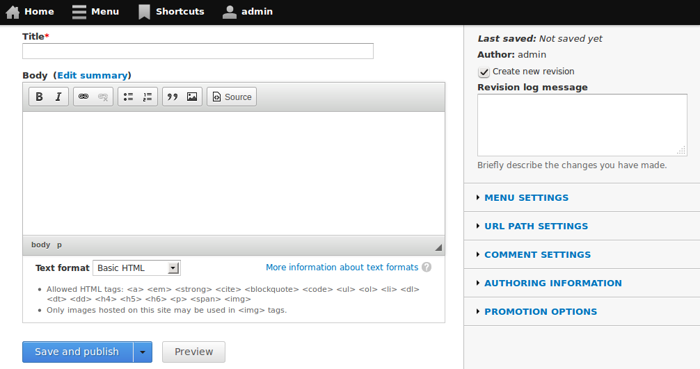

Is Drupal a CMS?
Do we even know what that means?
Presented by Larry Garfield
Act 0
As always, some history...
Drupal is an application!
Drupal is a framework!
Drupal is a framlication?
Framework-think
Why is saving a node programmatically not safe???
(And oh yeah, the node from could be better)
Application-think
We need a dashboard with widgets!
(Wait, why would you want to reuse them?)
#Smallcore
To put a finer point on this, the more Drupal becomes a better teddy bear (which is what the D7UX project was attempting), the less useful it becomes for all the other use cases that Drupal is currently being used to solve.
— Adrian Rossouw, 2009
#Smallcore
- Fewer assumptions => More flexibility
- Looser coupling => Easier development
- More flexibility => Better platform
- (do we really need all those demo modules?)
Ignore that last one, for Pete's sake!
Worst... Marketing... Ever...
...with components underneath that can be arbitrarily rearranged, we could build... a real CMS rather than a Framework/Application that tries to be a framework and an application in the same UI and fails.
— Larry Garfield, 2009
The way to build a better application is to build a better framework first, then build the application on top of it.
Why open old wounds?
The scab is still there.
So what happened?

Except...
The more Drupal becomes a better CMS, the less useful it becomes for all the other use cases that Drupal is currently being used to solve.
Act 1
What is a CMS?
A Content Management System
A System for Managing Content
The goal of any CMS should be to gather enough information to present the content on any platform, in any presentation, at any time.
— Daniel Jacobson, Fmr. Director of Application Development for NPR
COPE: Create Once, Publish EverywhereTrue CMS's are really just content capturing tools that are completely agnostic as to how or where the content will be viewed, whether it is a web page, mobile app, TV or radio display, etc.
— Daniel Jacobson
COPE: Create Once, Publish EverywhereA CMS must be presentation agnostic. If it is not presentation agnostic, it is not a CMS.
By creating presentation-independent content that includes meaningful metadata, you'll set yourself up for a future where your content can go anywhere.
— Karen McGrane
Content Strategy for MobileA System for Managing Content and metadata
A CMS consists of chunks, and rules for managing chunks.
This is non-trivial
Sadly, There is no Grand Unified Theory of Making Stuff Appear Together in Some Location
— Deane Barker
The Art and Practice of Content Assembly"Display" is just a special case of managing.
CMS tools
- Taxonomy
- Fields
- Views
- Rules
- Panels
The basic unit of a CMS is the content chunk
Act 2
Web Publishing Tools
A tool for publishing on the web
A tool for publishing pages on the web
WPT's capture content with the primary purpose of publishing web pages.
— Daniel Jacobson
COPE: Create Once, Publish EverywhereThe idyllic WPT is "Dreamweaver"-in-the-browser
Most users think they want this
(Do they really?)
(Do we just think they think they want this?)
WPT tools
- Edit
- WYSIWYG
- Panelizer
- Media
- Many text filters
Spark
DrupalCon Denver
- *Real* WYSIWYG & In-line editing
- Flexible layout tools
- Drag and drop *everything*
- Kick-ass media support
- ... oh yeah, and customized for any device :-)
I want to edit pages
The basic unit of a WPT is the page blob
Act 3
When Worlds Collide

The editing interfaces we offer... are affordances...
If the primary editing interface we present is also the visual design seen by site visitors, we are saying: 'This page is what you manage!' On certain sites, that message is true.
— Jeff Eaton
Inline Editing and the Cost of Leaky AbstractionsOn others...

— Michael Keara, @UserAdvocate
Act 4
What is Drupal?
Where does the edit form go?
is a philosophical question
The answer varies per-site.
Is Drupal a CMS or a WPT?
Is Drupal a Content Management System or a Web Publishing Tool?
Is Drupal a System for Managing Content, or for Publishing Pages?
Is the "page" our basic unit of stuff?
It cannot be both at the same time
We don't need to answer that question now
We need to ask the question every day
in every issue
Because your answer is not my answer
Not just visual
- Does the JSON form of a node have tids or terms?
- Does the JSON form of /node/1 include blocks?
- What if they're stored as fields?
- What if they're from Panelizer?
Act 5
Generals always fight the last war
We need to be fighting for tomorrow's market
People think in pages... It’s a comfortable metaphor.
In swallowing the red pill of responsive design... We need to start talking about content in terms of bits, not pages. And we need systems that help us think that way.
Is there such a system?
Can you name one?
Drupal can be...
The way to build a better Web Publishing Tool is to build a better CMS first, then build the WPT on top of it.
Further reading
- A Smallcore Manifesto
— Adrian Rossouw - Where do we go from here?
— Larry Garfield - COPE: Create Once, Publish Everywhere
— Daniel Jacobson - Content Strategy for Mobile
— Karen McGrane - Adaptive Content Management
— Mark Boulton - Inline Editing and the cost of leaky abstractions
— Jeff Eaton - Content Geography
The Art and Practice of Content Assembly
— Deane Barker